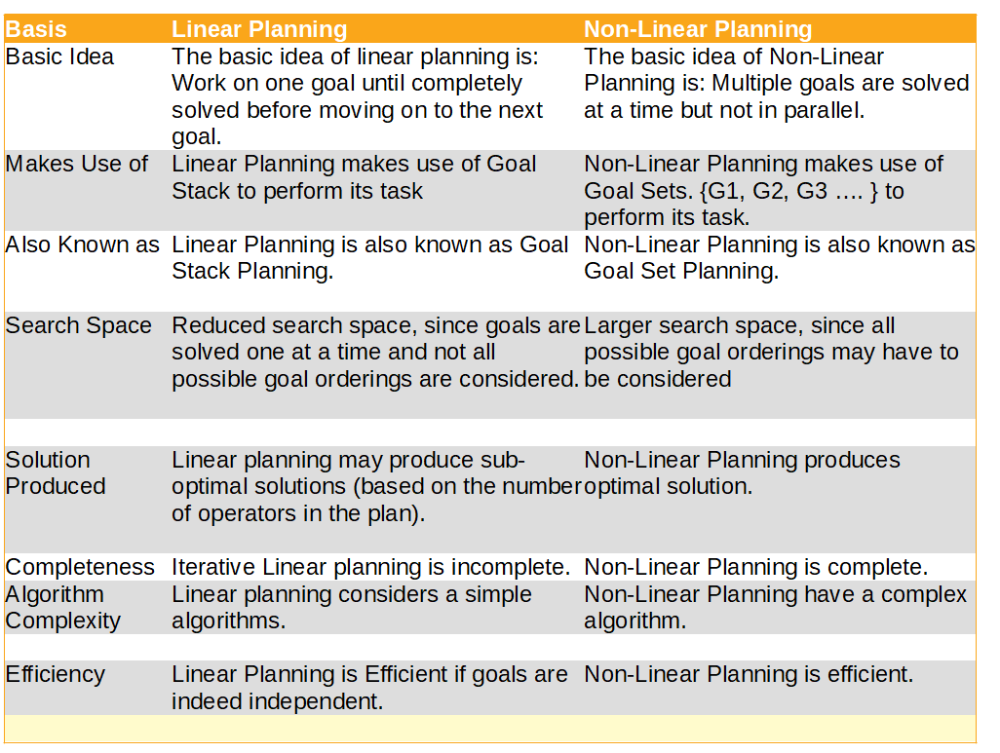

What is the main difference between Linear Planning and Non-Linear Planning?
The main difference between linear planning and non-linear planning is linear planning work on one goal until completely solved before moving on to the next goal whereas the basic idea of Non-Linear Planning is: Multiple goals are solved at a time but not in parallel.
| Basis | Linear Planning | Non-Linear Planning |
| Basic Idea | The basic idea of linear planning is: Work on one goal until completely solved before moving on to the next goal. | The basic idea of Non-Linear Planning is: Multiple goals are solved at a time but not in parallel. |
| Makes Use of | Linear Planning makes use of Goal Stack to perform its task | Non-Linear Planning makes use of Goal Sets. {G1, G2, G3 …. } to perform its task. |
| Also Known as | Linear Planning is also known as Goal Stack Planning. | Non-Linear Planning is also known as Goal Set Planning. |
| Search Space | Reduced search space, since goals are solved one at a time and not all possible goal orderings are considered. | Larger search space, since all possible goal orderings may have to be considered |
| Solution Produced | Linear planning may produce sub-optimal solutions (based on the number of operators in the plan). | Non-Linear Planning produces optimal solution. |
| Completeness | Iterative Linear planning is incomplete. | Non-Linear Planning is complete. |
| Algorithm Complexity | Linear planning considers a simple algorithms. | Non-Linear Planning have a complex algorithm. |
| Efficiency | Linear Planning is Efficient if goals are indeed independent. | Non-Linear Planning is efficient. |
Linear Planning
The linear planning is also called goal stack planning since this technique uses a goal stack to perform its task. The basic idea of linear planning is: Work on one goal until completely solved before moving on to the next goal. In this planning, the problem solver makes use of single stack that contains both goals and operators that have been proposed to satisfy those goals. The problem solver also relies on a database that describes the current situation and a set of operators described as PRECONDITION, ADD and DELETE lists. The goal stack planning attacks problems involving conjoined goals by solving the goals one at a time. A plan generated by this method contains a sequence of operators for attaining the first goal, followed by a complete sequence for the second goal etc. STRIPS (Stanford Research Institute Problem Solver) is an example of linear planner.
Non-Linear Planning
From previous Sussman anomaly, we saw that difficult problems cause goal interactions. The operators used to solve one sub-problem may interfere with the solution to a previous sub-problem. Most problems require an intertwined plan in which multiple sub-problems are worked on simultaneously. Such a plan is called non-linear plan because it is not composed of a linear sequence of complete sub-plans. The basic idea of nonlinear planning is that it uses goal set instead of goal stack and includes all possible sub-goal orderings in the search space. It handles goal interactions by interleaving. Some examples of nonlinear planners include NOAH, NONLIN, DEVISER, SIPE, TWEAK etc.